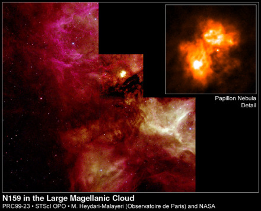
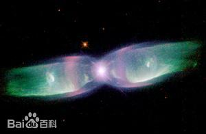
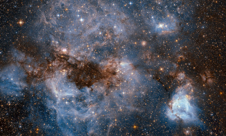
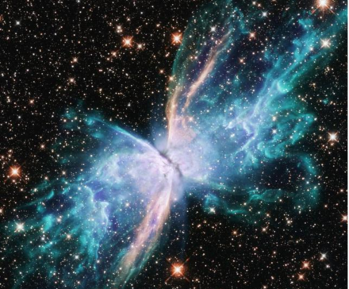

探索研究
美国国家航空航天局于2009年9月10公布了“哈勃”太空望远镜自五月开始修复后所拍摄的首批深空照片。这张图片被称之为“蝴蝶照”，实际是一个恒星所释放出来的能量极大的气束。“蝴蝶”的翅膀是由气流形成的气涡，其温度超过华氏36000度。气流的速度达到每小时60万英里，如果按照这个速度，从地球到月亮只需要24分钟。这颗恒星距离我们银河系大约有3800光年。整个蝴蝶星云宽达2光年，大约是太阳到半人马星座距离的一半。
事实上，当恒星的时候，将展现它最美的一面。 像太阳这类低质量的恒星，在演化成白矮星前会抛出它们外层的气体。 这膨胀的气体通常会形成无比壮观而美丽的行星状星云，然后在数千年里渐渐地暗下去。 这是蝴蝶星云（M2-9）的假色图像，它有着一对像翅膀的结构并且惊人地对称。 在它的中心有一个气体盘面，盘面的中央有两颗互绕运行的恒星，它们之间的距离是冥王星轨道的10倍。 即将恒星从气体盘面抛出气体，形成这样的双极外观。如今对形成这种行星状星云的物理机制还不是很清楚。它距离我们约2100光年远。位于人马座。
NASA的哈伯望远镜从扰动的气体蒸炉中观测到一颗名为N159的恒星诞生的过程，它位于17万光年外大麦哲伦星系中，从这颗大质量高温新恒星吹出的恒星风，将外围广达150光年的星云外型塑成了如圆弧、长柱和细丝等特殊的形状。
这是天文学家首度得以仔细观察这种罕见的密实、由高度游离气体所组成的蝴蝶形星云，它通常深藏于发光气体与黑暗尘云的大漩涡中心。透过哈伯望远镜的高解析力，天文学家测得其直径约 2光年（视直径 2"）。
这种双极形星云可能来源之一是，从隐藏在吸收带中央的大质量恒星（太阳质量的十倍以上）所喷出的气体。这类恒星的温度相当高，它们的辐射压甚至能将从周围气体盘落入的气体再沿着两极反推出去。
这次的观测，是大麦哲伦星系年轻大质量恒星搜寻计画的一部份。要观测到如此大质量、又刚诞生不久的新恒星，机会相当难得。在星云中，红色部分是氢、黄色则是高游离态的氧所发出来的。
这次的观测是由欧洲天文学家 Mohammad Heydari-Malayeri （法国巴黎天文台）与 Michael Rosa （德国欧南天文台）、Vassilis Charmandaris （巴黎天文台）、Lise Deharveng （法国马赛天文台）、Hans Zinnecker （德国天文物理协会）共同合作，他们的研究结果发表于欧洲天文与天文物理期刊上。
蝴蝶星云（M2-9）也叫巴比龙星云（Papillon Nebula）。巴比龙星云的法语意思是蝴蝶，它的另一个名字是N159。是蛇夫座美丽的行星状星云。大小约是150光年，位于我们的邻居星系大麦哲伦星云，和地球距离大约是17万光年。 与其它行星状星云一样，它也是类太阳恒星演化晚期的产物。它有一对非常对称的像蝴蝶翅膀一样的双极结构。对形成这种双极型行星状星云的物理机制的细节还不是很清楚。可以 肯定的是，在它的中心有一个气体盘面，盘面的中央有两颗互相绕转的恒星。就是这一对恒星在即将死亡的时候，从气体盘面抛出气体，灼热的气体向两端扩散形成了这样的双极外观。 与其类似的还有NGC 6302（Butterfly Nebula），该星云位于天蝎座中，二者俗名都叫蝴蝶星云。因此网上绝大部分新闻或图片分不清这两个星云。
| 中文名 | 蝴蝶星云（或译为：双喷流星云） | 赤 经 | 5时39分38.99秒 |
|---|---|---|---|
| 外文名 | Papillon Nebula | 赤 纬 | -69°44′35.99″ |
| 别 名 | 双喷流星云， 蝶形星云， 蝶翼 | 距地距离 | 2100光年(650 秒差距) |
| 发现者 | 鲁道夫·闵考斯基 | 半 径 | 0.7 ly (0.2 pc) |
| 发现时间 | 1947年 | 可视面积 | 115″× 18″ |
| 视星等 | 14.7 等 | 可分辨星系 | 大麦哲伦星云(LMC) |
| 绝对星等 | 5.6 等 | 显著特色 | 双极逸流、双极星云 |
1.名称来源

在寻找大质量恒星的过程中，哈勃太空望远镜又看到另一个很壮观的恒星形成区。巴比龙星云法文的意思是蝴蝶，它的另一个名字是N159，蝴蝶星云，学名闵考斯基2-9，缩写为M2-9（也称为闵考斯基的蝴蝶、蝶翼星云或就是双喷流星云）。它的大小约是150光年，位于我们的邻居星系大麦哲伦星云，和我们的距离大约是17万光年。在下面这张照片中，可以很清楚的看到许多明亮的新恒星、由尘埃组成的暗黑丝状物、炽热发光的氢气及中心附近的不寻常致密云气。 中心云气的形状为什么会像是哑铃？原因仍然不清楚，有可能是由一颗还没看到的大质量恒星所造成的，而这颗恒星有很厚气盘。 是鲁道夫·闵考斯基在1947年发现的一个行星状星云。它位于天蝎座，与地球的距离为2100光年。这个双极星云特有的双瓣是由中心恒星发出的物质构成的。因为瓣的形状相信是由极性的喷流造成的，因此天文学家曾经谑称这个星云为双喷流星云，但它的形状更像是蝴蝶的翅膀。哈勃太空望远镜在1990年代曾拍摄这个星云的影像。
2.演化进度

M2-9呈现星云中心的一个联星系统壮观的景象。联星系统的主要成员是一颗已经走到生命周期尽头的主序星，外层的气体已经喷发成为红巨星，并且炙热的核心即将发展成为白矮星；相信在它生命的早期是一颗类似太阳恒星。另一颗恒星，联星中质量较小的一颗，以非常靠近的轨道绕行，极可能已笼罩在对方扩散开来的恒星大气层内，经由彼此的交互作用创造了这个星云。天文学家的理论指出，一颗恒星的引力场可以从另一颗恒星的表面牵引出气体，并抛掷到太空中扩散形成薄而稠密的盘面。这样的盘面成功的推算出气体排出形成像M2-9的外观。 当正常的恒星在抛去了它们外层的气壳后，就会蜕变成白矮星。它们所抛出去的扩张气壳，经常会形成非常美丽动人的行星状星云，然后在数千年内慢慢消散无踪。M2-9是一个蝴蝶形状的行星状星云 ，距离我们2100光年。 在星云的中心，有两个恒星以大约10倍于冥王星轨道的距离，在一个气盘内互相绕行。恒星所抛出去的气壳，在这个气盘的影响下，形成了双极瓣的形态。
3.形成原因
蝴蝶星云因为高速的恒星风吹进了盘面，而戏剧性的快速膨胀，影响之下产生了巨大的垂直于盘面的细致沙漏型翼，这些翼的投影呈现出蝴蝶翅膀的形象。估计最外层的年龄已经有1200年之久（Schwarz et al. 1997）。 借助哈勃太空望远镜这个超级眼镜，我们能够欣赏这个壮丽景观，一个新星遗迹留下的行星状星云酷似一只展翅的“蝴蝶”，是由于灼热的气体向两端扩散形成的。 一颗恒星产生了一个宇宙“蝴蝶”。宇航员在执行第五次哈勃太空望远镜维修任务时，把这台新相机安装在它上面。哈勃科研组公布了这台升级后的望远镜拍到的第一批照片。“蝴蝶”状天体是一个行星状星云。天文学家借助哈勃太空望远镜的光学过滤器，可以准确查明该星云的化学组成、温度和密度，并追踪恒星。位于星云中间的恒星在尘埃团的影响下，显得特别昏暗。它的质量曾是我们的太阳的5倍。在过去2千年间，这颗恒星把包裹在它外层的大部分气体都驱散开，形成如梦如幻的“蝴蝶翅膀”，这两个“翅膀”的延伸长度大约是2光年。
4.最新发现

2020年6月23日，NASA公布了两张哈勃太空望远镜拍摄的行星状星云新图像，分别NGC6302“蝴蝶星云”和NGC7027。蝴蝶星云是位于天蝎座的一个行星状星云，距离地球约2417光年。它的中央有两个围绕对方运行的恒星，质量约为太阳的0.64倍。